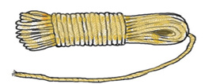

Zoezi la nne. Andika jina la mtu mrefu au kitu kirefu zaidi.
Swali la kwanza. Ana amesimama upande wa kushoto na Juma amesimama upande wa kulia.
Swali la pili. Kikombe kiko upande wa kushoto na chupa iko upande wa kulia.
Swali la tatu. Pipa liko upande wa kushoto na ndoo iko upande wa kulia.
121